第 2 次习题课 三角学¶
TD n°2 — Trigonométrie
CORRIGÉ · 参考解答
阅读说明
每段先列法语原文；其下缩进、带深蓝竖条的小字号段落为中文翻译。加粗为关键词，括号内为中文释义。
Exercices à préparer 预备练习¶
Exercice 1 练习 1¶
extraction de racines carrées 求平方根
Résoudre les équations d'inconnue \(z\in\mathbb{C}\) suivantes
求解下列以 \(z\in\mathbb{C}\) 为未知数的方程
où \(j\in\mathbb{C}\) tel que \(j^3=1\) et \(\operatorname{Im} j>0\).
其中 \(j\in\mathbb{C}\) 满足 \(j^3=1\) 且 \(\operatorname{Im} j>0\)。
Solution. 1. \(z^2=1\iff\boxed{z=1\text{ ou }z=-1}\)
解. 1. \(z^2=1\iff\boxed{z=1\text{ 或 }z=-1}\)
-
\(z^2=-1\iff\boxed{z=\pm i}\)
-
\(z^2=-1\iff\boxed{z=\pm i}\)
-
\(z^2=i=e^{i\pi/2}\iff z=\pm e^{i\pi/4} =\boxed{\pm\left(\frac{\sqrt2}{2}+i\frac{\sqrt2}{2}\right)}\)
-
\(z^2=i=e^{i\pi/2}\iff z=\pm e^{i\pi/4} =\boxed{\pm\left(\frac{\sqrt2}{2}+i\frac{\sqrt2}{2}\right)}\)
-
Ici on cherche \(a,b\in\mathbb{R}\) tels que \((a+ib\sqrt3)^2=7+4i\sqrt3\) c'est-à-dire \(a^2-3b^2=7\) et \(2ab=4\).
-
这里寻找 \(a,b\in\mathbb{R}\) 使得 \((a+ib\sqrt3)^2=7+4i\sqrt3\)， 即 \(a^2-3b^2=7\) 且 \(2ab=4\)。
Cela équivaut à \(ab=2\) et \(a^4-7a^2-12=0\) de discriminant \(\Delta=49+48=97\), d'où \(a^2=\frac{7\pm\sqrt{97}}{2}=\frac{7+\sqrt{97}}{2}\) car \(a\in\mathbb{R}\). Finalement
这等价于 \(ab=2\) 且 \(a^4-7a^2-12=0\)，其判别式 \(\Delta=49+48=97\)，故 \(a^2=\frac{7\pm\sqrt{97}}{2}=\frac{7+\sqrt{97}}{2}\) （因为 \(a\in\mathbb{R}\)）。最终
-
\(z^2=j=e^{2i\pi/3}\), d'où les solutions \(\boxed{z=\pm e^{i\pi/3}}\).
-
\(z^2=j=e^{2i\pi/3}\)，因此解为 \(\boxed{z=\pm e^{i\pi/3}}\)。
Exercice 2 练习 2¶
forme exponentielle 指数形式
Soient \(\alpha,\beta\in\mathbb{R}\). Écrire sous forme exponentielle
设 \(\alpha,\beta\in\mathbb{R}\)。将下式写成指数形式
Solution. On utilise \(\sin(\pi/2-\beta)=\cos\beta\) pour écrire
解. 利用 \(\sin(\pi/2-\beta)=\cos\beta\) 可写出
Par ailleur, on a \(\cos\theta\leqslant0\iff \theta\in\bigcup_{k\in\mathbb{Z}}\left[\frac{\pi}{2}+2k\pi,\frac{3\pi}{2}+2k\pi\right]\), donc
此外，\(\cos\theta\leqslant0\iff \theta\in\bigcup_{k\in\mathbb{Z}}\left[\frac{\pi}{2}+2k\pi,\frac{3\pi}{2}+2k\pi\right]\)，因此
Soient \(E\) un ensemble et \(A\) un sous-ensemble de \(E\). On note \(\chi_A:E\to\{0,1\}\) la fonction telle que pour tout \(x\in E\), \(\chi_A(x)=1\iff x\in A\). Alors si on note \(A=\bigcup_{k\in\mathbb{Z}}\left[\frac{3\pi}{2}+4k\pi,\frac{7\pi}{2}+4k\pi\right]\), la forme exponentielle de \(z\) est
设 \(E\) 为集合，\(A\) 为 \(E\) 的子集。记 \(\chi_A:E\to\{0,1\}\) 为满足 “对任意 \(x\in E\)，\(\chi_A(x)=1\iff x\in A\)”的函数。那么若记 \(A=\bigcup_{k\in\mathbb{Z}}\left[\frac{3\pi}{2}+4k\pi,\frac{7\pi}{2}+4k\pi\right]\)， 则 \(z\) 的指数形式为
Remarque : Si \(\cos\left(\frac{\pi}{4}-\frac{\alpha+\beta}{2}\right)=0\) c'est-à-dire si \(\exists k\in\mathbb{Z}\), \(\alpha+\beta=\frac{3\pi}{2}+2k\pi\), alors le module est nul et l'argument est indéterminé.
注：若 \(\cos\left(\frac{\pi}{4}-\frac{\alpha+\beta}{2}\right)=0\)， 即存在 \(k\in\mathbb{Z}\) 使 \(\alpha+\beta=\frac{3\pi}{2}+2k\pi\)， 则模为零，辐角不确定。
Exercice 3 练习 3¶
linéariser/développer 线性化/展开
- Pour \(\theta\in\mathbb{R}\), écrire les expressions suivantes comme sommes de sinus et de cosinus
- 对 \(\theta\in\mathbb{R}\)，将下列表达式写成正弦与余弦之和
Solution. a) En utilisant \(\sin(2\theta)=2\sin\theta\cos\theta\) et \(\cos(2\theta)=1-2\sin^2\theta\), on a
解. a) 利用 \(\sin(2\theta)=2\sin\theta\cos\theta\) 与 \(\cos(2\theta)=1-2\sin^2\theta\)，有
b) En utilisant la formule d'Euler pour \(\cos\theta\), on a
b) 利用 \(\cos\theta\) 的欧拉公式，有
c) En utilisant les formules d'Euler pour \(\cos\theta\) et \(\sin\theta\), on a
c) 利用 \(\cos\theta\) 与 \(\sin\theta\) 的欧拉公式，有
- Pour \(\theta\in\mathbb{R}\), écrire les expressions suivantes comme polynômes en \(\sin\theta\) et \(\cos\theta\)
- 对 \(\theta\in\mathbb{R}\)，将下列表达式写成关于 \(\sin\theta\) 与 \(\cos\theta\) 的多项式
Solution. Pour effectuer ces opérations on utilise la formule de Moivre après avoir pris, pour \(\alpha\in\mathbb{R}\), \(\cos\alpha=\operatorname{Re}\left(e^{i\alpha}\right)\) ou \(\sin\alpha=\operatorname{Im}\left(e^{i\alpha}\right)\).
解. 为完成这些运算，我们先取（对 \(\alpha\in\mathbb{R}\)） \(\cos\alpha=\operatorname{Re}\left(e^{i\alpha}\right)\) 或 \(\sin\alpha=\operatorname{Im}\left(e^{i\alpha}\right)\)，再使用棣莫弗公式。
a) On a
a) 有
b) On a
b) 有
c) On a, en utilisant la formule de Moivre et \(\sin^2\theta=1-\cos^2\theta\),
c) 利用棣莫弗公式与 \(\sin^2\theta=1-\cos^2\theta\)，有
Exercice 4 练习 4¶
somme 求和
Soit \(n\in\mathbb{N}^*\). Soit \(\theta\in\mathbb{R}\), calculer \(S_n(\theta)=\sum_{k=1}^{n}\sin(2k\theta)\), puis résoudre \(S_n(\theta)=0\).
设 \(n\in\mathbb{N}^*\)。设 \(\theta\in\mathbb{R}\)，计算 \(S_n(\theta)=\sum_{k=1}^{n}\sin(2k\theta)\)，然后解 \(S_n(\theta)=0\)。
Solution. Si \(\theta=k\pi\) avec \(k\in\mathbb{Z}\) alors \(S_n(\theta)=0\), sinon
解. 若 \(\theta=k\pi\)（\(k\in\mathbb{Z}\)），则 \(S_n(\theta)=0\)；否则
On trouve donc
于是得到
Exercice 5 练习 5¶
primitive 原函数
Déterminer une primitive de \(f:x\mapsto\cos(2x+1)\sin(3x-1)\).
求 \(f:x\mapsto\cos(2x+1)\sin(3x-1)\) 的一个原函数。
Solution. En utilisant \(\cos a\sin b=\frac12(\sin(a+b)-\sin(a-b))\), on a, pour tout réel \(x\),
解. 利用 \(\cos a\sin b=\frac12(\sin(a+b)-\sin(a-b))\)， 对任意实数 \(x\)，有
On sait primitiver ces fonctions linéaires en sinus. On trouve donc comme primitive de \(f\) la fonction \(F\) définie, pour tout réel \(x\), par
这些关于 \(x\) 的线性函数的正弦可以求原函数。因此 \(f\) 的一个原函数为 对任意实数 \(x\) 定义的函数 \(F\)：
Exercice 6 练习 6¶
inéquation oscillante 振荡不等式
Trouver l'ensemble des réels \(x\) tels que \(\sin(7x)\leqslant\sin(5x)\).
求满足 \(\sin(7x)\leqslant\sin(5x)\) 的实数 \(x\) 的集合。
Solution. Tout d'abord on remarque que, pour tout réel \(y\), \(\sin y=\operatorname{Im}(e^{iy})\), donc, avec pour tout réel \(x\), \(e^{ix}-e^{-ix}=2i\sin x\), on a
解. 首先注意到，对任意实数 \(y\)，\(\sin y=\operatorname{Im}(e^{iy})\)， 因此，且对任意实数 \(x\)，\(e^{ix}-e^{-ix}=2i\sin x\)，有
Aussi a-t-on \(\sin(7x)\leqslant\sin(5x)\iff
\cos(6x)\sin x\leqslant0\).
En considérant \(\cos(6x)=0\iff6x\equiv\frac{\pi}{2}\text{ modulo }\pi
\iff x\equiv\frac{\pi}{12}\text{ modulo }\frac{\pi}{6}\), l'expression précédente change de signe en \(0\), \(\pm\frac{\pi}{12}\), \(\pm\frac{\pi}{4}\), \(\pm\frac{5\pi}{12}\), \(\pm\frac{7\pi}{12}\), \(\pm\frac{3\pi}{4}\), \(\pm\frac{11\pi}{12}\), et pour \(x>0\) proche de \(0\) on a \(\cos(6x)\sin x>0\). D'où
于是有 \(\sin(7x)\leqslant\sin(5x)\iff\cos(6x)\sin x\leqslant0\)。
考虑 \(\cos(6x)=0\iff6x\equiv\frac{\pi}{2}\text{（模 }\pi\text{）}
\iff x\equiv\frac{\pi}{12}\text{（模 }\frac{\pi}{6}\text{)}\)， 上述表达式在 \(0\)、\(\pm\frac{\pi}{12}\)、\(\pm\frac{\pi}{4}\)、 \(\pm\frac{5\pi}{12}\)、\(\pm\frac{7\pi}{12}\)、\(\pm\frac{3\pi}{4}\)、 \(\pm\frac{11\pi}{12}\) 处变号，且当 \(x>0\) 且靠近 \(0\) 时 \(\cos(6x)\sin x>0\)。因此
Exercice 7 练习 7¶
inéquation décalée 平移不等式
Résoudre \(\cos\left(\theta+\frac{\pi}{3}\right)\leqslant \sin\left(\theta+\frac{\pi}{7}\right)\).
解 \(\cos\left(\theta+\frac{\pi}{3}\right)\leqslant \sin\left(\theta+\frac{\pi}{7}\right)\)。
Solution. Tout d'abord, en utilisant \(\sin\theta=\cos\left(\frac{\pi}{2}-\theta\right)\), on remarque que
解. 首先，利用 \(\sin\theta=\cos\left(\frac{\pi}{2}-\theta\right)\)， 注意到
On a alors en utilisant \(\cos\theta=\operatorname{Re}(e^{i\theta})\) puis en factorisant par la moyenne algébrique des deux nombres complexes obtenus,
然后利用 \(\cos\theta=\operatorname{Re}(e^{i\theta})\)， 再对所得两个复数的代数平均值作因式分解，得到
Comme \(-2\sin\left(\frac{29\pi}{84}\right)<0\), on a
由于 \(-2\sin\left(\frac{29\pi}{84}\right)<0\)，有
Vocabulaire clé
重点词汇
- extraction de racines carrées：平方根的提取
- forme exponentielle：指数形式
- forme algébrique：代数形式
- linéariser：线性化
- développer：展开
- primitive：原函数
- inéquation：不等式
- ensemble des solutions：解集
- somme d'une suite géométrique：等比数列求和
- formule d'Euler：欧拉公式
- formule de Moivre：棣莫弗公式
- discriminant：判别式
- racine de l'unité：单位根
- module：模
- argument：辐角
- proche de：靠近……
- changer de signe：变号
- polynôme en \(\sin\theta\) et \(\cos\theta\)：关于 \(\sin\theta\) 与 \(\cos\theta\) 的多项式
Exercices supplémentaires 补充练习¶
Exercice 8 练习 8¶
points fixes de l'exponentielle 指数函数的不动点
Montrer que l'équation \(\exp(z)=z\) d'inconnue \(z\in\mathbb{C}\) admet une infinité de solutions.
证明以 \(z\in\mathbb{C}\) 为未知数的方程 \(\exp(z)=z\) 有无穷多个解。
Solution. On sait déjà qu'il n'y a pas de solutions réelles et que l'ensemble des solutions est invariant par conjugaison car \(\overline{e^z}=e^{\bar z}\). On peut donc supposer que \(z=x+iy\) où \((x,y)\in\mathbb{R}\times\mathbb{R}_+^*\). On a :
解. 已知没有实数解，且解集在共轭变换下不变，因为 \(\overline{e^z}=e^{\bar z}\)。因此可设 \(z=x+iy\)，其中 \((x,y)\in\mathbb{R}\times\mathbb{R}_+^*\)。有：
Puisque \(y>0\), la deuxième équation implique que \(y\in\bigcup_{k\in\mathbb{N}}]2k\pi,\pi+2k\pi[\). Et puisque \(\cos(y)\neq0\) car sinon la première équation entraine \(x=0\) puis la seconde \(y=\sin y\) qui ne se réalise qu'en \(0\), on peut supposer que \(y\in E_k=]2k\pi,\pi+2k\pi[\setminus\{\frac{\pi}{2}+2k\pi\}\) où \(k\in\mathbb{N}\). Alors :
由于 \(y>0\)，第二式蕴含 \(y\in\bigcup_{k\in\mathbb{N}}]2k\pi,\pi+2k\pi[\)。又因为 \(\cos(y)\neq0\)， 否则第一式推出 \(x=0\)，进而第二式给出 \(y=\sin y\)，而这只在 \(0\) 处成立， 所以可设 \(y\in E_k=]2k\pi,\pi+2k\pi[\setminus\{\frac{\pi}{2}+2k\pi\}\)， 其中 \(k\in\mathbb{N}\)。于是：
La fonction \(f:y\mapsto\frac{y}{\tan(y)} -\ln\left(\frac{y}{\sin(y)}\right)\) est dérivable sur \(E_k\) comme composée de fonctions usuelles et :
函数 \(f:y\mapsto\frac{y}{\tan(y)} -\ln\left(\frac{y}{\sin(y)}\right)\) 作为常见函数的复合，在 \(E_k\) 上可导，且：
D'autre part, on a :
另一方面，有：
On en déduit que :

由此推出：
D'après le théorème des valeurs intermédiaires, on obtient que \(f(y)=0\) admet une unique solution sur \(E_k\) (qui est comprise entre \(2k\pi\) et \(\frac{\pi}{2}+2k\pi\)). Donc \(\exp(z)=z\) admet bien une infinité de solutions.
根据介值定理，\(f(y)=0\) 在 \(E_k\) 上有唯一解（位于 \(2k\pi\) 与 \(\frac{\pi}{2}+2k\pi\) 之间）。因此 \(\exp(z)=z\) 确实有无穷多个解。
Exercice 9 练习 9¶
calcul de \(\cos(\pi/5)\) 计算 \(\cos(\pi/5)\)
Le but de cet exercice est de calculer les valeurs exactes de \(\cos\left(\frac{\pi}{5}\right)\) et \(\sin\left(\frac{\pi}{5}\right)\).
本练习的目的是计算 \(\cos\left(\frac{\pi}{5}\right)\) 与 \(\sin\left(\frac{\pi}{5}\right)\) 的精确值。
-
Résoudre l'équation \(z^5=1\) d'inconnue \(z\in\mathbb{C}\). On donnera le résultat sous forme exponentielle.
-
解以 \(z\in\mathbb{C}\) 为未知数的方程 \(z^5=1\)，结果用指数形式表示。
Solution. L'équation \(z^5=1\) a pour solution les cinq racines cinquièmes de l'unité c'est-à-dire
解. 方程 \(z^5=1\) 的解是五个五次单位根，即
-
Soit \(u=e^{2i\pi/5}\), montrer que \(u^4+u^3+u^2+u+1=0\).
-
设 \(u=e^{2i\pi/5}\)，证明 \(u^4+u^3+u^2+u+1=0\)。
Solution. On a \(u\) racine de \(z^5-1=(z-1)(z^4+z^3+z^2+z+1)\) c'est-à-dire \((u-1)(u^4+u^3+u^2+u+1)=0\). Or \(u\neq1\) donc \(u^4+u^3+u^2+u+1=0\).
解. \(u\) 是 \(z^5-1=(z-1)(z^4+z^3+z^2+z+1)\) 的根，即 \((u-1)(u^4+u^3+u^2+u+1)=0\)。而 \(u\neq1\)，故 \(u^4+u^3+u^2+u+1=0\)。
-
Résoudre l'équation d'inconnue \(z\in\mathbb{C}\), \(z^4+z^3+z^2+z+1=0\) et donner le résultat sous forme algébrique \(z=a+ib\) avec \(a,b\in\mathbb{R}\) exprimés à l'aide de racines carrées.
(On pourra poser la variable intermédiaire \(w=z+z^{-1}\) et se ramener à la résolution de deux équations de degré deux successives.) -
解以 \(z\in\mathbb{C}\) 为未知数的方程 \(z^4+z^3+z^2+z+1=0\)， 并将结果写成代数形式 \(z=a+ib\)，其中 \(a,b\in\mathbb{R}\) 用平方根表示。
（可引入中间变量 \(w=z+z^{-1}\)，化为依次求解两个二次方程。）
Solution. 0 n'est pas solution donc on peut diviser l'équation par \(z^2\) et
解. 0 不是解，故可将方程除以 \(z^2\)，得
On pose \(w=z+z^{-1}\), on a alors l'équation sur \(w\)
令 \(w=z+z^{-1}\)，则得到关于 \(w\) 的方程
de discriminant \(\Delta=1+4=5\), donc \(w=\frac{-1\pm\sqrt5}{2}\).
其判别式 \(\Delta=1+4=5\)，故 \(w=\frac{-1\pm\sqrt5}{2}\)。
Maintenant il reste à résoudre pour les deux cas \(+\) et \(-\) dans l'écriture de \(w\),
现在只需对 \(w\) 的两种情形（正号与负号）分别求解，
de discriminant
其判别式为
D'où les quatre solutions distinctes
由此得到四个互异解
-
En déduire des expressions algébriques pour \(\cos\left(\frac{\pi}{5}\right)\) et \(\sin\left(\frac{\pi}{5}\right)\).
-
由此推出 \(\cos\left(\frac{\pi}{5}\right)\) 与 \(\sin\left(\frac{\pi}{5}\right)\) 的代数表达式。
Solution. On a, en utilisant \(\cos(\pi-\theta)=-\cos\theta\) et \(\sin(\pi-\theta)=\sin\theta\),
解. 利用 \(\cos(\pi-\theta)=-\cos\theta\) 与 \(\sin(\pi-\theta)=\sin\theta\)，有
En plaçant \(e^{4i\pi/5}\) sur le cercle trigonométrique

将 \(e^{4i\pi/5}\) 标在三角圆上
on trouve
得到
et
以及
On vérifie
验证
Exercice 10 练习 10¶
sommes en \(\sum z^k\) 形如 \(\sum z^k\) 的求和
Soient \(n\in\mathbb{N}\) et \(x\in\mathbb{R}\). Calculer les sommes suivantes
设 \(n\in\mathbb{N}\)，\(x\in\mathbb{R}\)。计算下列求和
1. \(\displaystyle S_1=\sum_{k=0}^{n}\cos(kx)\) \(\displaystyle S_2=\sum_{k=0}^{n}\sin(kx)\)
1. \(\displaystyle S_1=\sum_{k=0}^{n}\cos(kx)\) \(\displaystyle S_2=\sum_{k=0}^{n}\sin(kx)\)
Solution. Le calcul de ces sommes repose sur la somme d'une suite géométrique qui dit que pour tout \(z\in\mathbb{C}\setminus\{1\}\) on a
解. 这些求和的计算基于等比数列求和公式：对任意 \(z\in\mathbb{C}\setminus\{1\}\)，有
On a pour \(x\notin2\pi\mathbb{Z}\), grâce à la formule de Moivre,
对 \(x\notin2\pi\mathbb{Z}\)，利用棣莫弗公式，有
On en déduit
由此推出
Dans le cas où il existe \(k\in\mathbb{Z}\) tel que \(x=2k\pi\), on a \(S_1=n+1\) et \(S_2=0\).
若存在 \(k\in\mathbb{Z}\) 使 \(x=2k\pi\)，则 \(S_1=n+1\) 且 \(S_2=0\)。
2. \(\displaystyle S_3=\sum_{k=0}^{n}\cos^2(kx)\) \(\displaystyle S_4=\sum_{k=0}^{n}\sin^2(kx)\)
2. \(\displaystyle S_3=\sum_{k=0}^{n}\cos^2(kx)\) \(\displaystyle S_4=\sum_{k=0}^{n}\sin^2(kx)\)
Solution. Tout d'abord on remarque que \(S_3+S_4=n+1\).
Ensuite, en utilisant, pour tout réel \(\theta\), \(\cos(2\theta)=2\cos^2\theta-1\), on a
解. 首先注意到 \(S_3+S_4=n+1\)。
其次，利用对任意实数 \(\theta\) 有 \(\cos(2\theta)=2\cos^2\theta-1\)，得
où, pour calculer la somme, on a utilisé le cacul de \(S_1\) en remplaçant \(x\) par \(2x\).
Finalement, si \(\forall k\in\mathbb{Z}\), \(x\neq k\pi\), alors
其中计算该和时利用了 \(S_1\) 的计算结果，并将 \(x\) 换成 \(2x\)。
最终，若对任意 \(k\in\mathbb{Z}\) 有 \(x\neq k\pi\)，则；否则 \(S_3=n+1\) 且 \(S_4=0\)。
3. \(\displaystyle S_5=\sum_{k=0}^{n}\frac{\cos(kx)}{\cos^k x}\) \(\displaystyle S_6=\sum_{k=0}^{n}\frac{\sin(kx)}{\cos^k x}\)
3. \(\displaystyle S_5=\sum_{k=0}^{n}\frac{\cos(kx)}{\cos^k x}\) \(\displaystyle S_6=\sum_{k=0}^{n}\frac{\sin(kx)}{\cos^k x}\)
Solution. On a, en utilisant Moivre, si pour tout \(k\in\mathbb{Z}\), \(x\neq\pi/2+k\pi\) et \(x\neq k\pi\), alors \(\frac{e^{ix}}{\cos x}\) est défini différent de \(1\) et
解. 利用棣莫弗公式，若对任意 \(k\in\mathbb{Z}\) 有 \(x\neq\pi/2+k\pi\) 且 \(x\neq k\pi\)，则 \(\frac{e^{ix}}{\cos x}\) 有定义且不等于 \(1\)，并且
On en déduit qu'alors
由此推出
Dans le cas où il existe \(k\in\mathbb{Z}\) tel que \(x=k\pi\), on a \(S_5=n+1\) et \(S_6=0\).
若存在 \(k\in\mathbb{Z}\) 使 \(x=k\pi\)，则 \(S_5=n+1\) 且 \(S_6=0\)。
4. \(\displaystyle S_7=\sum_{k=0}^{n}\binom{n}{k}\cos(kx)\) \(\displaystyle S_8=\sum_{k=0}^{n}\binom{n}{k}\sin(kx)\)
4. \(\displaystyle S_7=\sum_{k=0}^{n}\binom{n}{k}\cos(kx)\) \(\displaystyle S_8=\sum_{k=0}^{n}\binom{n}{k}\sin(kx)\)
Solution. Pour calculer ces sommes, on utilise le binôme de Newton.
解. 为计算这些和，使用牛顿二项式定理。
D'où
因此
Exercice 11 练习 11¶
irrationalité 无理性
On note \(\theta\) l'unique réel appartenant à \([0,\pi/2]\) tel que \(\cos\theta=1/3\). Le but de cet exercice est de prouver que \(\theta\) n'est pas de la forme \(p\pi/q\) avec \(p,q\in\mathbb{N}^*\). Raisonnons par l'absurde et supposons qu'il existe \(p,q\in\mathbb{N}^*\) tels que \(\theta=p\pi/q\).
记 \(\theta\) 为 \([0,\pi/2]\) 中满足 \(\cos\theta=1/3\) 的唯一实数。 本练习旨在证明 \(\theta\) 不具有 \(p\pi/q\) 的形式，其中 \(p,q\in\mathbb{N}^*\)。我们采用反证法，假设存在 \(p,q\in\mathbb{N}^*\) 使得 \(\theta=p\pi/q\)。
-
Donner une forme algébrique de \(e^{i\theta}\) et montrer que \((1+i2\sqrt2)^{2q}=3^{2q}\).
-
给出 \(e^{i\theta}\) 的代数形式，并证明 \((1+i2\sqrt2)^{2q}=3^{2q}\)。
Solution. Si \(\theta\in[0,\pi/2]\) et \(\cos\theta=1/3\) alors \(\sin\theta=\sqrt{1-\cos^2\theta}=\frac{2\sqrt2}{3}\), et
解. 若 \(\theta\in[0,\pi/2]\) 且 \(\cos\theta=1/3\)，则 \(\sin\theta=\sqrt{1-\cos^2\theta}=\frac{2\sqrt2}{3}\)，且
En supposant \(\theta=p\pi/q\), c'est-à-dire \(q\theta=p\pi\), on a
假设 \(\theta=p\pi/q\)，即 \(q\theta=p\pi\)，则
D'où
因此
-
Démontrer que pour tout \(k\in\mathbb{N}\), il existe \((a_k,b_k)\in\mathbb{Z}^2\) tel que \((1+i2\sqrt2)^k=a_k+ib_k\sqrt2\).
-
证明对任意 \(k\in\mathbb{N}\)，存在 \((a_k,b_k)\in\mathbb{Z}^2\) 使得 \((1+i2\sqrt2)^k=a_k+ib_k\sqrt2\)。
Solution. Montrons par récurrence sur \(k\in\mathbb{N}\) que \(\forall k\in\mathbb{N}\), \(\exists a_k,b_k\in\mathbb{Z}\) tels que \((1+i2\sqrt2)^k=a_k+ib_k\sqrt2\) :
解. 对 \(k\in\mathbb{N}\) 归纳证明 \(\forall k\in\mathbb{N}\)，\(\exists a_k,b_k\in\mathbb{Z}\) 使得 \((1+i2\sqrt2)^k=a_k+ib_k\sqrt2\)：
-
C'est vrai pour \(k=0\), on a alors \(a_0=1\) et \(b_0=0\).
\(k=0\) 时成立，此时 \(a_0=1\) 且 \(b_0=0\)。
-
Supposons le résultat vrai pour \(k\in\mathbb{N}\), soient alors \(a_k,b_k\in\mathbb{Z}\) tels que \((1+i2\sqrt2)^k=a_k+ib_k\sqrt2\), on a
\[ \begin{aligned} (1+i2\sqrt2)^{k+1}&=(1+i2\sqrt2)(1+i2\sqrt2)^k\\ &=(1+i2\sqrt2)(a_k+ib_k\sqrt2) =a_k-4b_k+i(2a_k+b_k)\sqrt2. \end{aligned} \]假设结论对 \(k\in\mathbb{N}\) 成立，即存在 \(a_k,b_k\in\mathbb{Z}\) 使得 \((1+i2\sqrt2)^k=a_k+ib_k\sqrt2\)，则
En posant
\[ \begin{cases} a_{k+1}=a_k-4b_k\\ b_{k+1}=2a_k+b_k \end{cases} \]令
on obtient le résultat pour \(k+1\).
即得 \(k+1\) 时的结论。
On conclut par récurrence
由归纳法得
-
Montrer que pour tout \(k\in\mathbb{N}\), \(a_{k+2}=2a_{k+1}-9a_k\), prouver que \(\forall k\in\mathbb{N}\), \(3\) ne divise pas \(a_k\), puis conclure.
-
证明对任意 \(k\in\mathbb{N}\)，\(a_{k+2}=2a_{k+1}-9a_k\)； 证明 \(\forall k\in\mathbb{N}\)，\(3\) 不整除 \(a_k\)；然后得出结论。
Solution. On a pour tout \(k\in\mathbb{N}\), \(a_{k+2}=a_{k+1}-4b_{k+1}\), \(b_{k+1}=2a_k+b_k\) et \(-4b_k=a_{k+1}-a_k\), d'où
解. 对任意 \(k\in\mathbb{N}\)，有 \(a_{k+2}=a_{k+1}-4b_{k+1}\)、 \(b_{k+1}=2a_k+b_k\) 且 \(-4b_k=a_{k+1}-a_k\)，故
Par récurrence sur \(k\in\mathbb{N}^*\), montrons que pour tout \(k\in\mathbb{N}^*\), \(3\) ne divise pas \(a_k\) :
对 \(k\in\mathbb{N}^*\) 归纳证明：对任意 \(k\in\mathbb{N}^*\)， \(3\) 不整除 \(a_k\)：
-
C'est vrai pour \(k=1\), on a \(3\) ne divise pas \(a_1=1\).
\(k=1\) 时成立，\(3\) 不整除 \(a_1=1\)。
-
Supposons le résultat vrai pour \(k\in\mathbb{N}^*\), \(3\) ne divise pas \(a_k\), alors comme \(3\) ne divise ni \(2\) ni \(a_k\), \(3\) ne divise pas \(2a_k\) ni \(2a_k-9a_{k-1}=a_{k+1}\).
假设结论对 \(k\in\mathbb{N}^*\) 成立，即 \(3\) 不整除 \(a_k\)；由于 \(3\) 既不整除 \(2\) 也不整除 \(a_k\)，故 \(3\) 不整除 \(2a_k\)，也不整除 \(2a_k-9a_{k-1}=a_{k+1}\)。
On conclut par récurrence que pour tout \(k\in\mathbb{N}^*\), \(3\) ne divise pas \(a_k\).
由归纳法得：对任意 \(k\in\mathbb{N}^*\)，\(3\) 不整除 \(a_k\)。
Or, si on suit l'hypothèse de départ, comme \(q>0\), \(3\) divise \(3^{2q}=(1+i2\sqrt2)^{2q}=a_{2q}\). D'où contradiction.
On conclut par l'absurde que \(\theta/\pi\) n'est pas rationnel.
然而，按初始假设，由于 \(q>0\)，\(3\) 整除 \(3^{2q}=(1+i2\sqrt2)^{2q}=a_{2q}\)。矛盾。
故由反证法知 \(\theta/\pi\) 不是有理数。\(\square\)
Vocabulaire clé
重点词汇
- point fixe：不动点
- invariant par conjugaison：共轭不变
- théorème des valeurs intermédiaires：介值定理
- tableau de variations：变化表
- dérivable：可导
- unique solution：唯一解
- racine cinquième de l'unité：五次单位根
- cercle trigonométrique：三角圆
- valeur exacte：精确值
- suite géométrique：等比数列
- binôme de Newton：牛顿二项式
- récurrence：归纳法
- diviser / diviser par：整除 / 除以
- rationnel：有理数
- irrationalité：无理性
- par l'absurde：反证法
- en déduire：由此推出
- on remarque que：注意到
- on conclut que：于是得出